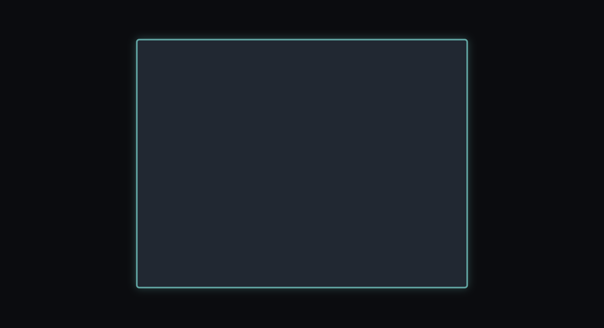
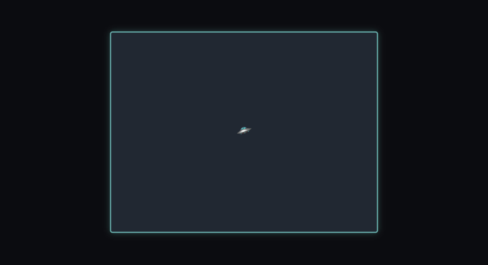

Теорія: Підготовка та створення героя
✧Опис гри
Сьогодні ми створимо справжню космічну аркаду! Наш головний герой — це НЛО 🛸, яке має захищатися від навали космічних прибульців 👾, стріляючи по них зірками ⭐️.
Стартовий код
Для початку, створіть три файли (index.html,
style.css, script.js) та скопіюйте в них
цей початковий код.
<!doctype html>
<html lang="uk">
<head>
<meta charset="UTF-8" />
<title>Space Arcade</title>
<link rel="stylesheet" href="style.css" />
<script src="script.js" defer></script>
</head>
<body>
<canvas id="gameCanvas" width="800" height="600"></canvas>
</body>
</html>body {
margin: 0;
overflow: hidden;
background-color: #0b0c10;
display: flex;
justify-content: center;
align-items: center;
height: 100vh;
}
canvas {
background-color: #1f2833;
border: 4px solid #45a29e;
border-radius: 8px;
box-shadow: 0 0 20px rgba(69, 162, 158, 0.4);
max-width: 95vw;
max-height: 95vh;
aspect-ratio: 4 / 3;
object-fit: contain;
}const canvas = document.getElementById("gameCanvas");
const ctx = canvas.getContext("2d");
const width = canvas.width;
const height = canvas.height;
ctx.textAlign = "center";
ctx.textBaseline = "middle";
// ✦ - ✦ - ✦ - ✦ - ✦ - ✦ - ✦ - ✦ - ✦ - ✦ - ✦
// ПАНЕЛЬ НАЛАШТУВАНЬ ГРИ
// ✦ - ✦ - ✦ - ✦ - ✦ - ✦ - ✦ - ✦ - ✦ - ✦ - ✦
const SETTINGS = {
ufoSpeed: 4, // Швидкість НЛО
ufoSize: 45, // Розмір НЛО
starSpeed: 10, // Швидкість зірочки
starSize: 25, // Розмір зірочки
shootWaitTime: 250, // Затримка між пострілами (менше = швидше)
alienSpeed: 2.6, // Швидкість прибульців
alienSize: 35, // Розмір прибульців
alienWaitTime: 1100, // Як часто з'являються вороги
maxAliens: 10, // Максимум ворогів на екрані
};
// Базовий стан гри
let score = 0;
let gameOver = false;
let isStarted = false;
let lastShootTime = 0;
let lastAlienTime = 0;
const stars = [];
const aliens = [];
let ufo;
const keys = {
KeyW: false,
KeyA: false,
KeyS: false,
KeyD: false,
ArrowUp: false,
ArrowDown: false,
ArrowLeft: false,
ArrowRight: false,
};
// ✦ - ✦ - ✦ - ✦ - ✦ - ✦ - ✦ - ✦ - ✦ - ✦ - ✦
// КЛАСИ (Об'єкти гри)
// ✦ - ✦ - ✦ - ✦ - ✦ - ✦ - ✦ - ✦ - ✦ - ✦ - ✦
// 🌌 Ufo
// 🌌 Star
// 🌌 Alien
// ✦ - ✦ - ✦ - ✦ - ✦ - ✦ - ✦ - ✦ - ✦ - ✦ - ✦
// ФУНКЦІЇ СТАНУ ГРИ
// ✦ - ✦ - ✦ - ✦ - ✦ - ✦ - ✦ - ✦ - ✦ - ✦ - ✦
function startGame() {
score = 0;
gameOver = false;
isStarted = true;
stars.length = 0;
aliens.length = 0;
lastAlienTime = Date.now();
lastShootTime = 0;
}
// ✦ - ✦ - ✦ - ✦ - ✦ - ✦ - ✦ - ✦ - ✦ - ✦ - ✦
// ФУНКЦІЇ МАЛЮВАННЯ (Меню та Інтерфейс)
// ✦ - ✦ - ✦ - ✦ - ✦ - ✦ - ✦ - ✦ - ✦ - ✦ - ✦
// 🌌 drawScore
// 🌌 drawMenu
// 🌌 drawEnd
// ✦ - ✦ - ✦ - ✦ - ✦ - ✦ - ✦ - ✦ - ✦ - ✦ - ✦
// ФУНКЦІЇ ІГРОВОЇ ЛОГІКИ
// ✦ - ✦ - ✦ - ✦ - ✦ - ✦ - ✦ - ✦ - ✦ - ✦ - ✦
// 🌌 shootStars
// 🌌 makeAlien
// 🌌 isHit
// 🌌 updateAll
// ✦ - ✦ - ✦ - ✦ - ✦ - ✦ - ✦ - ✦ - ✦ - ✦ - ✦
// КЕРУВАННЯ КЛАВІАТУРОЮ
// ✦ - ✦ - ✦ - ✦ - ✦ - ✦ - ✦ - ✦ - ✦ - ✦ - ✦
window.addEventListener("keydown", (e) => {
if (keys.hasOwnProperty(e.code)) keys[e.code] = true;
if (e.code === "Space") {
if (!isStarted || gameOver) startGame();
e.preventDefault();
}
});
window.addEventListener("keyup", (e) => {
if (keys.hasOwnProperty(e.code)) keys[e.code] = false;
});
// ✦ - ✦ - ✦ - ✦ - ✦ - ✦ - ✦ - ✦ - ✦ - ✦ - ✦
// ГОЛОВНИЙ ЦИКЛ ГРИ (Play)
// ✦ - ✦ - ✦ - ✦ - ✦ - ✦ - ✦ - ✦ - ✦ - ✦ - ✦
function play() {
requestAnimationFrame(play);
ctx.clearRect(0, 0, width, height);
// Поки що тут пусто, згодом додамо малювання!
}
// ✦ - ✦ - ✦ - ✦ - ✦ - ✦ - ✦ - ✦ - ✦ - ✦ - ✦
// Запускаємо гру!
startGame();
play(); // Запускаємо гру!

Крок 1: Малюємо НЛО 🛸
У програмуванні зручно об'єднувати властивості (координати, розмір)
та дії (малювання, рух) в одну структуру — Клас.
Для створення класів використовується ключове слово
class. Давайте створимо клас для нашого героя — НЛО.
Завдання 1.1: Створення класу
Ufo {
// Тут будемо писати код корабля
}class Ufo {
// Тут будемо писати код корабля
}
Коли ми створюємо об'єкт (наприклад, конкретне НЛО), запускається
спеціальна функція —
конструктор (constructor). Слово
this (цей) вказує, що ми записуємо властивості саме в
ЦЕЙ конкретний корабель.
Завдання 1.2: Властивості та малювання
(x, y) {
.x = x;
.y = y;
.size = SETTINGS.ufoSize;
.speed = SETTINGS.ufoSpeed;
.hitArea = this.size * 0.6;
.emoji = "🛸";
}
draw() {
ctx.font = this.size + "px Arial";
ctx.fillText(this.emoji, this.x, this.y);
}constructor(x, y) {
this.x = x;
this.y = y;
this.size = SETTINGS.ufoSize;
this.speed = SETTINGS.ufoSpeed;
this.hitArea = this.size * 0.6;
this.emoji = "🛸";
}
draw(ctx) {
ctx.font = this.size + "px Arial";
ctx.fillText(this.emoji, this.x, this.y);
}
Супер! Клас є. Але це лише креслення. Тепер треба створити сам
корабель по центру екрану за допомогою слова new і
намалювати його.
👉 Знайдіть у своєму коді функцію
startGame() і додайте створення НЛО. Потім у функції
play() намалюйте його (викличте його метод
draw).
Завдання 1.3: Поява на екрані
// Додайте це всередину startGame()
ufo = Ufo(width / 2, height / 2);
// Додайте це всередину play()
if (isStarted) {
.draw(ctx);
}// У функції startGame():
ufo = new Ufo(width / 2, height / 2);
// У функції play():
if (isStarted) {
ufo.draw(ctx);
}
Крок 2: Додаємо двигуни (Рух)
Наш корабель поки що висить у космосі, як камінь. Додамо йому метод
move, щоб він реагував на кнопки WASD.
Завдання 1.4: Читаємо клавіатуру
Допишіть перевірку клавіш S, A та D у класі Ufo.
// Додайте цей метод всередину класу Ufo, під методом draw(ctx)
move(keys) {
if (keys.KeyW) this.y -= this.speed;
if (keys.) this.y += this.speed;
if (keys.) this.x -= this.speed;
if (keys.) this.x += this.speed;
}move(keys) {
if (keys.KeyW) this.y -= this.speed;
if (keys.KeyS) this.y += this.speed;
if (keys.KeyA) this.x -= this.speed;
if (keys.KeyD) this.x += this.speed;
}
👉 Тепер викличте ufo.move(keys); у функції
play() перед малюванням!
✨ ТЕСТУВАННЯ
Натискайте клавіші WASD, щоб рухати НЛО по полотну.
⚠️ Проблема: Зараз НЛО може вилетіти
за межі полотна!
Крок 3: Ставимо стіни (Межі екрану)
Щоб НЛО не втікало, ми маємо перевіряти, чи не торкається воно країв полотна, перед тим як зробити крок.
Завдання 1.5: Перевірка кордонів
Замініть свій метод move на цей вдосконалений
варіант. Що нам потрібно передати в метод, щоб знати розміри
полотна?
move(keys, canvasWidth, canvasHeight) {
const canMoveUp = this.y > this.size / 2;
const canMoveDown = this.y < canvasHeight - this.size / 2;
const canMoveLeft = this.x > this.size / 2;
const canMoveRight = this.x <<canvasWidth - this.size / 2;
if (keys.KeyW && canMoveUp) this.y -= this.speed;
if (keys.KeyS && ) this.y += this.speed;
if (keys.KeyA && ) this.x -= this.speed;
if (keys.KeyD && ) this.x += this.speed;
}move(keys, canvasWidth, canvasHeight) {
const canMoveUp = this.y > this.size / 2;
const canMoveDown = this.y < canvasHeight - this.size / 2;
const canMoveLeft = this.x > this.size / 2;
const canMoveRight = this.x <<canvasWidth - this.size / 2;
if (keys.KeyW && canMoveUp) this.y -= this.speed;
if (keys.KeyS && canMoveDown) this.y += this.speed;
if (keys.KeyA && canMoveLeft) this.x -= this.speed;
if (keys.KeyD && canMoveRight) this.x += this.speed;
}
👉 Оскільки ми додали нові параметри в метод move, не
забудьте оновити його виклик у функції play():
ufo.move(keys, width, height);
✨ ТЕСТУВАННЯ
Летіть у будь-який кут екрану. НЛО має врізатися в невидиму стіну і зупинитися!
Теорія: Зброя до бою! (Стрільба)
✧Крок 4: Створюємо зірки (Стрільба)
Наш корабель вміє літати, але щоб захищатися, йому потрібна зброя!
Ми будемо стріляти зірками (⭐️).
Спочатку створимо клас Star. На відміну від НЛО, зірка
має летіти в певному напрямку, тому їй потрібні дві нові
властивості: vx (швидкість по горизонталі) та
vy (швидкість по вертикалі).
Завдання 2.1: Клас Зірки
Заповніть пропуски, щоб зберегти швидкості та навчити зірку рухатися (додавати швидкість до своїх координат).
class Star {
constructor(x, y, vx, vy) {
this.x = x;
this.y = y;
this. = vx;
this. = vy;
this.size = SETTINGS.starSize;
this.emoji = "⭐️";
}
move() {
this.x += this.;
this.y += this.;
}
draw(ctx) {
ctx.font = this.size + "px Arial";
ctx.fillText(this.emoji, this.x, this.y);
}
// Функція-помічник: чи вилетіла зірка за екран?
isOut = (w, h) => this.x < 0 || this.x > w || this.y < 0 || this.y > h;
}class Star {
constructor(x, y, vx, vy) {
this.x = x;
this.y = y;
this.vx = vx;
this.vy = vy;
this.size = SETTINGS.starSize;
this.emoji = "⭐️";
}
move() {
this.x += this.vx;
this.y += this.vy;
}
draw(ctx) {
ctx.font = this.size + "px Arial";
ctx.fillText(this.emoji, this.x, this.y);
}
isOut = (w, h) => this.x < 0 || this.x > w || this.y < 0 || this.y > h;
}Крок 5: Перезарядка (Cooldown) та Постріл
Тепер напишемо функцію shootStars(now). Вона буде
перевіряти, чи натиснуті СТРІЛОЧКИ на клавіатурі.
Магічна формула прицілювання: Щоб зірка летіла рівно (навіть
якщо ми стріляємо по діагоналі), ми використовуємо математичну
функцію Math.hypot для вираховування правильного
напрямку.
⚠️
Зверніть увагу на змінну canShoot! Вона не дає нам
випускати 100 зірок за секунду (перезарядка).
Завдання 2.2: Логіка Стрільби
Допишіть перевірку стрілочок та команду додавання нової зірки в кінець масиву.
shootStars(now) {
// Перезарядка: чи пройшло достатньо часу з минулого пострілу?
const canShoot = now - lastShootTime > SETTINGS.shootWaitTime;
// Якщо можна стріляти
if () {
let dx = 0;
let dy = 0;
if (keys.ArrowUp) dy -= 1;
if (keys.) dy += 1;
if (keys.) dx -= 1;
if (keys.) dx += 1;
// Якщо хоч якась стрілочка натиснута
if (dx !== 0 || dy !== 0) {
const distance = Math.hypot(dx, dy);
const vx = (dx / distance) * SETTINGS.starSpeed;
const vy = (dy / distance) * SETTINGS.starSpeed;
// Створюємо нову зірку і додаємо її в масив
stars.(new Star(ufo.x, ufo.y, vx, vy));
// Оновлюємо час пострілу
lastShootTime = now;
}
}
}function shootStars(now) {
const canShoot = now - lastShootTime > SETTINGS.shootWaitTime;
if (canShoot) {
let dx = 0;
let dy = 0;
if (keys.ArrowUp) dy -= 1;
if (keys.ArrowDown) dy += 1;
if (keys.ArrowLeft) dx -= 1;
if (keys.ArrowRight) dx += 1;
if (dx !== 0 || dy !== 0) {
const distance = Math.hypot(dx, dy);
const vx = (dx / distance) * SETTINGS.starSpeed;
const vy = (dy / distance) * SETTINGS.starSpeed;
stars.push(new Star(ufo.x, ufo.y, vx, vy));
lastShootTime = now;
}
}
}
👉 Щоб усе запрацювало, потрібно додати цю функцію в
Головний цикл play(). Окрім того, треба пройтися по списку зірок і намалювати їх.
Завдання 2.3: Оновлення циклу гри
Оновіть функцію play(), додавши стрільбу та малювання
зірок.
function play() {
requestAnimationFrame(play);
ctx.clearRect(0, 0, width, height);
if (isStarted) {
const now = Date.now(); // Отримуємо поточний час
ufo.move(keys, width, height);
(now); // Запускаємо перевірку стрільби
// Рухаємо та малюємо кожну зірку з масиву stars
stars.forEach((star) => {
star.();
star.(ctx);
});
ufo.draw(ctx);
}
}function play() {
requestAnimationFrame(play);
ctx.clearRect(0, 0, width, height);
if (isStarted) {
const now = Date.now();
ufo.move(keys, width, height);
shootStars(now);
stars.forEach((star) => {
star.move();
star.draw(ctx);
});
ufo.draw(ctx);
}
}✨ ТЕСТУВАННЯ
Оновіть сторінку і спробуйте натискати стрілочки (вгору, вниз,
вліво, вправо). З вашого НЛО мають вилітати зірки!
Спробуйте змінити shootWaitTime у налаштуваннях
SETTINGS з 250 на 50. Що змінилося? 😎
Теорія: Інопланетне вторгнення (Прибульці)
✧Крок 6: Спавн прибульців 👾
Космос не може бути порожнім! Час додати ворогів. Почнемо зі
створення "креслення" для нашого прибульця — класу
Alien.
Завдання 3.1: Клас Прибульця
Заповніть пропуски, щоб створити конструктор та навчити ворога малюватися на екрані.
Alien {
(x, y) {
this.x = x;
this.y = y;
this.speed = SETTINGS.alienSpeed;
this.size = SETTINGS.alienSize;
this.emoji = "👾";
}
draw(ctx) {
ctx.font = this.size + "px Arial";
ctx.(this.emoji, this.x, this.y);
}
}class Alien {
constructor(x, y) {
this.x = x;
this.y = y;
this.speed = SETTINGS.alienSpeed;
this.size = SETTINGS.alienSize;
this.emoji = "👾";
}
draw(ctx) {
ctx.font = this.size + "px Arial";
ctx.fillText(this.emoji, this.x, this.y);
}
}
Щоб гра не була нудною, вороги повинні з'являтися випадково і з
різних боків екрану. Для цього ми напишемо функцію
makeAlien(now), яка створюватиме нового ворога кожні
кілька секунд.
Завдання 3.2: Поява ворогів
Додайте прибульця у список aliens, якщо прийшов час
для його появи. Пригадайте, яка функція використовується для
генерації випадкових чисел.
function makeAlien(now) {
const isTime = now - lastAlienTime > SETTINGS.alienWaitTime;
if (isTime && aliens.length < SETTINGS.maxAliens) {
let x;
let y;
// Випадкова поява з різних сторін екрану
if (Math.() < 0.5) {
x = Math.() * width;
y = Math.() < 0.5 ? -40 : height + 40;
} else {
x = Math.() < 0.5 ? -40 : width + 40;
y = Math.() * height;
}
// Додаємо нового ворога в список
aliens.(new Alien(x, y));
// Оновлюємо час на поточний (зараз)
lastAlienTime = ;
}
}function makeAlien(now) {
const isTime = now - lastAlienTime > SETTINGS.alienWaitTime;
if (isTime && aliens.length < SETTINGS.maxAliens) {
let x;
let y;
if (Math.random() < 0.5) {
x = Math.random() * width;
y = Math.random() < 0.5 ? -40 : height + 40;
} else {
x = Math.random() < 0.5 ? -40 : width + 40;
y = Math.random() * height;
}
aliens.push(new Alien(x, y));
lastAlienTime = now;
}
}Крок 7: Розумні прибульці (ШІ)
Наші прибульці не повинні просто стояти на місці! Вони мають
полювати на НЛО. Для цього ми використаємо Радар —
математичну функцію Math.atan2, яка вміє ідеально
визначати кут до нашого корабля, щоб ворог летів рівно на нього.
Завдання 3.3: Рух прибульця
Додайте цей метод всередину класу Alien (після
конструктора). Змінна target — це ціль, до якої
летить прибулець.
move(target) {
// Радар: шукаємо напрямок до цілі
const angle = Math.(target.y - this.y, target.x - this.x);
// Робимо крок у бік цілі
this.x += Math.cos(angle) * this.speed;
this.y += Math.sin(angle) * this.speed;
} move(target) {
const angle = Math.atan2(target.y - this.y, target.x - this.x);
this.x += Math.cos(angle) * this.speed;
this.y += Math.sin(angle) * this.speed;
}
👉 Тепер, як і у випадку із зірками, нам треба додати створення, рух
та малювання прибульців у наш
Головний цикл play().
Завдання 3.4: Оновлення циклу гри
Оновіть функцію play(). Запустіть функцію появи
прибульців, а потім навчіть кожного з них рухатися за НЛО.
function play() {
requestAnimationFrame(play);
ctx.clearRect(0, 0, width, height);
if (isStarted) {
const now = Date.now();
ufo.move(keys, width, height);
shootStars(now);
(now); // Запускаємо появу прибульців
stars.forEach((star) => {
star.move();
star.draw(ctx);
});
// Рухаємо та малюємо прибульців
aliens.forEach((alien) => {
alien.move(); // Передаємо НЛО як ціль для радару
alien.(ctx);
});
ufo.draw(ctx);
}
}function play() {
requestAnimationFrame(play);
ctx.clearRect(0, 0, width, height);
if (isStarted) {
const now = Date.now();
ufo.move(keys, width, height);
shootStars(now);
makeAlien(now);
stars.forEach((star) => {
star.move();
star.draw(ctx);
});
aliens.forEach((alien) => {
alien.move(ufo);
alien.draw(ctx);
});
ufo.draw(ctx);
}
}✨ ТЕСТУВАННЯ
Політайте по екрану. Юрба прибульців має з'являтися і летіти прямо
за вами! 👾👾👾
Зверніть увагу: наразі ми проходимо крізь них, і зірки їх не
знищують. Навчимося обробляти зіткнення у наступній частині!
Теорія: Зіткнення та Інтерфейс
✦Крок 8: Математика зіткнень 💥
Зараз наші об'єкти проходять один крізь одного. Щоб додати
зіткнення, нам треба вміти вимірювати відстань між ними.
Правило:
"Якщо відстань між центрами двох кружечків менша за суму їхніх
радіусів (половину розміру) — БУМ! Вони зіткнулися."
Завдання 4.1: Функція isHit
Додайте математичну функцію для перевірки зіткнень. Ми знову
використаємо Math.hypot для вимірювання відстані.
function isHit(obj1, obj2) {
// Вимірюємо відстань
const distance = Math.(obj1.x - obj2.x, obj1.y - obj2.y);
// Чи менша відстань за половину їхніх розмірів?
return distance < obj1. / 2 + obj2. / 2;
}function isHit(obj1, obj2) {
const distance = Math.hypot(obj1.x - obj2.x, obj1.y - obj2.y);
return distance < obj1.size / 2 + obj2.size / 2;
}Крок 9: Обробка зіткнень (updateAll)
Ми створимо нову велику функцію updateAll(), яка буде
відповідати за прибирання сміття (видалення зірок, що вилетіли за
екран) та перевірку, чи хтось у когось влучив.
Щоб видалити елемент зі списку, програмісти використовують слово
splice.
Завдання 4.2: Хто кого збив?
Заповніть пропуски: зробіть так, щоб гра закінчувалася (gameOver), коли прибулець торкається НЛО, і щоб рахунок (score) збільшувався, коли зірка влучає в прибульця.
function updateAll() {
for (let i = stars.length - 1; i >= 0; i--) {
let star = stars[i];
star.move();
// Видаляємо зірки, які вилетіли за екран
if (star.isOut(width, height)) stars.(i, 1);
}
for (let i = aliens.length - 1; i >= 0; i--) {
let alien = aliens[i];
alien.move(ufo);
// Перевірка: Прибулець зловив НЛО! Гру завершено!
const ufoHitArea = { x: ufo.x, y: ufo.y, size: ufo.hitArea };
if (isHit(ufoHitArea, alien)) {
= true;
break;
}
// Перевірка: Зірка влучила в прибульця!
for (let j = stars.length - 1; j >= 0; j--) {
let star = stars[j];
if (isHit(alien, star)) {
aliens.(i, 1); // Видаляємо ворога
stars.(j, 1); // Видаляємо зірку
+= 10; // Додаємо 10 балів!
break;
}
}
}
}function updateAll() {
for (let i = stars.length - 1; i >= 0; i--) {
let star = stars[i];
star.move();
if (star.isOut(width, height)) stars.splice(i, 1);
}
for (let i = aliens.length - 1; i >= 0; i--) {
let alien = aliens[i];
alien.move(ufo);
const ufoHitArea = { x: ufo.x, y: ufo.y, size: ufo.hitArea };
if (isHit(ufoHitArea, alien)) {
gameOver = true;
break;
}
for (let j = stars.length - 1; j >= 0; j--) {
let star = stars[j];
if (isHit(alien, star)) {
aliens.splice(i, 1);
stars.splice(j, 1);
score += 10;
break;
}
}
}
}Крок 10: Текст та Екрани (Інтерфейс)
Гра майже готова, але нам бракує красивого стартового меню та відображення рахунку. Оскільки код малювання тексту досить довгий, просто скопіюйте ці три готові функції та вставте їх у свій код у розділ ФУНКЦІЇ МАЛЮВАННЯ:
function drawScore() {
ctx.save();
ctx.fillStyle = "#66fcf1";
ctx.textAlign = "left";
ctx.font = "bold 24px Arial";
ctx.fillText("Рахунок: " + score, 20, 40);
ctx.restore();
}function drawMenu() {
ctx.fillStyle = "rgba(11, 12, 16, 0.8)";
ctx.fillRect(0, 0, width, height);
ctx.fillStyle = "#66fcf1";
ctx.font = "bold 50px Arial";
ctx.fillText("Space Arcade", width / 2, height / 2 - 40);
ctx.fillStyle = "#c5c6c7";
ctx.font = "20px Arial";
ctx.fillText("Натисни ПРОБІЛ, щоб почати", width / 2, height / 2 + 30);
ctx.fillText("WASD - рух, СТРІЛКИ - стрільба", width / 2, height / 2 + 70);
}function drawEnd() {
ctx.fillStyle = "rgba(11, 12, 16, 0.8)";
ctx.fillRect(0, 0, width, height);
ctx.fillStyle = "#66fcf1";
ctx.font = "bold 50px Arial";
ctx.fillText("Кінець гри!", width / 2, height / 2 - 40);
ctx.font = "30px Arial";
ctx.fillText(`Твій рахунок: ${score}`, width / 2, height / 2 + 10);
ctx.fillStyle = "#c5c6c7";
ctx.font = "20px Arial";
ctx.fillText("Натисни ПРОБІЛ, щоб грати знову", width / 2, height / 2 + 60);
}Завдання 4.3: Останні штрихи в play()
Оновіть функцію play() так, щоб вона вміла показувати
Стартове меню та екран Кінець гри. Також викличте функцію
малювання рахунку в самому кінці.
function play() {
requestAnimationFrame(play);
ctx.clearRect(0, 0, width, height);
// Показуємо меню, якщо гра ще не почалася
if (!isStarted) {
();
return; // Зупиняємо виконання коду далі
}
// Показуємо екран програшу
if (gameOver) {
();
return;
}
const now = Date.now();
ufo.move(keys, width, height);
shootStars(now);
makeAlien(now);
updateAll(); // Наша нова супер-функція!
ufo.draw(ctx);
stars.forEach((star) => star.draw(ctx));
aliens.forEach((alien) => alien.draw(ctx));
// Малюємо бали поверх усього
();
}function play() {
requestAnimationFrame(play);
ctx.clearRect(0, 0, width, height);
if (!isStarted) {
drawMenu();
return;
}
if (gameOver) {
drawEnd();
return;
}
const now = Date.now();
ufo.move(keys, width, height);
shootStars(now);
makeAlien(now);
updateAll();
ufo.draw(ctx);
stars.forEach((star) => star.draw(ctx));
aliens.forEach((alien) => alien.draw(ctx));
drawScore();
}❗️ УВАГА: Важливий крок!
Оскільки тепер у нас є стартове меню, гра не повинна запускатися
автоматично. Спустіться в самий низ вашого файлу
script.js і видаліть або закоментуйте рядок
startGame(); перед play();.
// startGame(); <-- Закоментуйте це!
play(); // Залишаємо тільки цеКрок 11: Хакерство та Модинг 👨💻👩💻
Вітаємо, ви створили повноцінну гру! Тепер настав час зробити її
унікальною. Підніміться на самий початок вашого файлу до об'єкта
SETTINGS та класів. Змініть гру на свій смак. Наприклад:
-
Змініть персонажів: Знайдіть рядки
this.emoji = "...";і, наприклад, замініть НЛО на мавпочку 🐒, прибульців на динозаврів 🦖, а зірки на банани 🍌! -
Зробіть супер-швидкість: Збільште
ufoSpeedдо 10. -
Складний режим: Зменше
alienWaitTimeрівним 200, щоб нові прибульці з'являлися швидше! -
Розміри: Знайдіть у
SETTINGSпараметриufoSize,starSizeтаalienSizeта спробуйте змінити розміри обʼєктів, щоб грати стало простіше або важче. - Стилі: Оберіть власні кольори для гри відредагуйте CSS-код.
🎉 Вітаю із завершенням курсу! 🥳